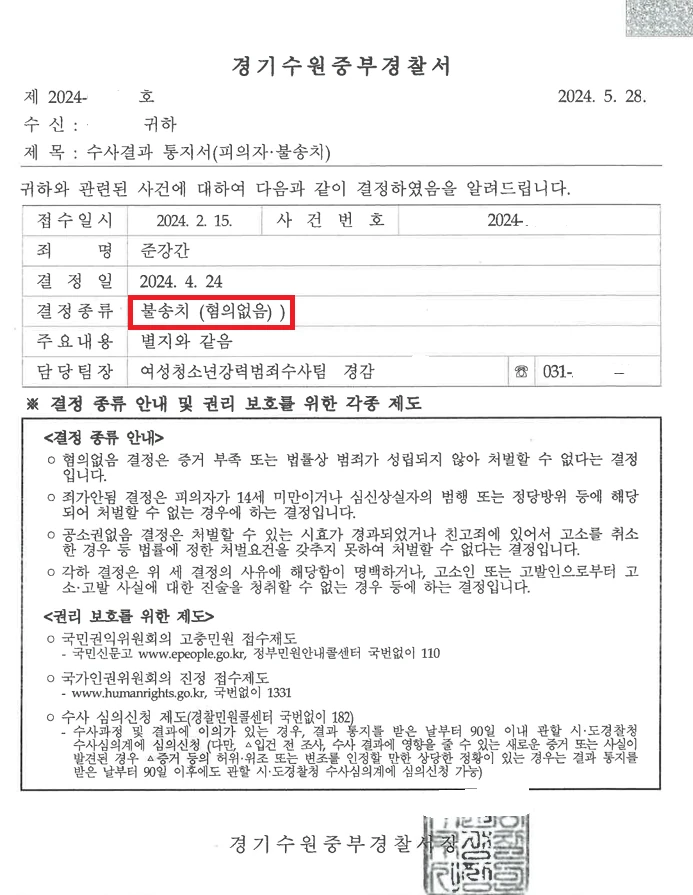
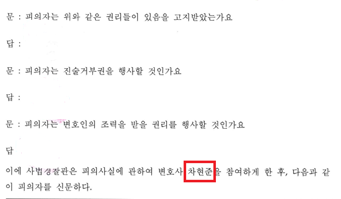

친한 아르바이트생과 술을 마시고 만취한 아르바이트생을 집으로 데려가 재웠다가 준강간으로 고소당한 사건 경찰단계에서 혐의없음 처분으로 방어한 사건
[준강간]
성범죄 전력 있는 피의자 사건
경찰단계 불송치, 혐의없음
- 사건개요
의뢰인은 과거 강제추행 사건으로 벌금형 및 성범죄 신상등록 처분을 받은 전력이 있었습니다. 이러한 상황에서 의뢰인은 자신이 고용한 아르바이트생으로부터 준강간 혐의로 고소를 당하게 되었습니다.
고소인은 평소 의뢰인과 식사와 술자리를 여러 차례 함께한 사이였고, 사건 당일에도 의뢰인과 술자리를 가졌습니다. 이후 고소인이 술자리 도중 구토를 하고 정상적인 귀가가 어려운 상태가 되자, 의뢰인은 고소인을 안전하게 쉬게 하기 위해 자신의 주거지로 데려갔다고 설명하였습니다.
그러나 다음 날 고소인은 당시 상황을 문제 삼으며 의뢰인을 준강간 혐의로 고소하였습니다. 의뢰인에게는 이미 성범죄 전력이 있었기 때문에, 수사기관이 사건을 엄중하게 볼 가능성이 높은 사안이었습니다.
- 핵심 쟁점 및 법률사무소 준일의 조력
이 사건의 핵심은 고소인이 당시 심신상실 또는 항거불능 상태에 있었는지, 그리고 의뢰인이 그러한 상태를 이용하여 성적 행위를 하였는지 여부였습니다.
법률사무소 준일의 차현준 변호사는 경찰단계부터 사건을 맡아 조사에 동석하고, 사건 당일의 이동 경위, 평소 두 사람의 관계, 술자리 전후 정황, 의뢰인이 고소인을 데려가게 된 이유를 면밀히 정리하였습니다.
특히 의뢰인의 행위가 고소인을 보호하기 위한 조치였다는 점, 고소인을 방치하거나 위험한 상태로 귀가시키기 어려웠던 사정, 사건 전후 의뢰인의 설명이 일관된 점을 강조하였습니다.
또한 준강간죄가 성립하기 위해서는 단순히 상대방이 술에 취해 있었다는 사정만으로는 부족하고, 항거불능 상태를 이용한 성적 행위가 인정되어야 한다는 점을 중심으로 변호인의견서를 작성하였습니다.
- 결과 및 의의
그 결과 경찰은 의뢰인에 대하여 준강간 혐의없음 불송치 결정을 하였습니다.
이 사건은 성범죄 전력이 있는 피의자에게 다시 중대한 성범죄 혐의가 제기된 사안이었기 때문에 초기 대응이 매우 중요했습니다. 자칫하면 과거 전력으로 인해 불리한 선입견이 작용할 수 있었고, 준강간 혐의의 특성상 진술과 정황 분석이 핵심이 되는 사건이었습니다.
법률사무소 준일은 경찰조사 단계부터 사건의 구조를 정리하고, 의뢰인의 행위가 범죄가 아닌 보호 조치였다는 점을 구체적으로 소명하였습니다.
그 결과 의뢰인은 중대한 성범죄 혐의에서 벗어날 수 있었고, 사건은 경찰단계에서 불송치로 종결되었습니다.
※ 구체적인 사건은 사실관계에 따라 달라질 수 있습니다.

 한석일 대표변호사
한석일 대표변호사